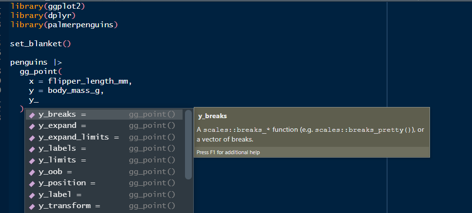
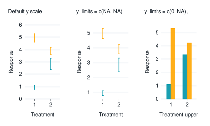

Overview
ggblanket is a package of ggplot2 wrapper functions.
The primary objective is to simplify ggplot2 visualisation.
Secondary objectives relate to:
- Design: produce well-designed visualisation
- Alignment: use conventions aligned with ggplot2
- Scope: cover much of what ggplot2 does.
Computational speed has been traded-off to achieve these objectives.
How it works
- Almost forty
gg_*wrapper functions - A
colargument to colour and fill by a variable - A
facetargument to facet by a variable - A
facet2argument to facet by a 2nd variable - A
col_palargument to customise colours - Numerous other prefixed arguments to customise
- Unspecified titles converted to
snakecase::sentence_case - A
modeargument designed for provided*_mode_*themes - Families of
*_mode_*themes that differ by legend placement - Access to other
geom_*arguments via... - A symmetrical continuous scale with easy opt-out
- Ability to add multiple
geom_*layers - Access other aesthetics via
mapping - Set the default style with
set_blanket - A
gg_blanket()function withgeomflexibility
library(ggblanket)
library(ggplot2)
library(dplyr)
library(stringr)
library(tidyr)
library(palmerpenguins)
library(patchwork)
set_blanket()1. Almost forty gg_* wrapper functions
Each gg_* function wraps a ggplot2
ggplot2::ggplot() function with the applicable ggplot2
geom_*() function.
Each gg_* function is named after the
geom_* function it wraps.
Note at the start of every script, the set_blanket
function should be run to set the default style for subsequent ggblanket
plots.
penguins |>
gg_point(
x = flipper_length_mm,
y = body_mass_g,
)
2. A single col argument to colour and fill by a
variable
The colour and fill aesthetics of ggplot2 are merged into a single
concept represented by the col argument.
This combined aesthetic means that everything should be coloured according to it, i.e. all coloured outlines and filled interiors.
penguins |>
gg_point(
x = flipper_length_mm,
y = body_mass_g,
col = species,
)
penguins |>
drop_na(sex) |>
mutate(across(sex, str_to_sentence)) |>
gg_bar(
position = "dodge",
y = species,
col = sex,
width = 0.75,
)
3. A facet argument to facet by a variable
Faceting is treated as if it were an aesthetic. Users just provide an unquoted variable to facet by.
Whenever a facet variable is provided (and a
facet2 variable not provided), the
facet_layout will default to "wrap".
penguins |>
drop_na(sex) |>
mutate(across(sex, str_to_sentence)) |>
gg_histogram(
x = flipper_length_mm,
facet = species,
)
4. A facet2 argument to facet by a 2nd variable
A facet2 argument is also provided for extra
functionality and flexibility.
This enables users to facet easily in a "grid" layout of
the facet variable horizontally by the facet2
variable vertically.
Whenever a facet2 variable is provided, the
facet_layout will default to "grid".
penguins |>
mutate(across(sex, str_to_sentence)) |>
gg_histogram(
x = flipper_length_mm,
facet = species,
facet2 = sex,
)
5. A col_pal argument to customise colours
The col_pal argument is used to customise the colour
outlines and interior fill of the geom. A user can provide a vector of
colours to this argument. It can be named or not. It works in a
consistent way - regardless of whether a col aesthetic is
added or not.
economics |>
gg_area(
x = date,
y = unemploy,
col_pal = "#006C7A"
)
viridisLite::rocket(n = 9)
#> [1] "#03051AFF" "#30173AFF" "#611F53FF" "#961C5BFF" "#CB1B4FFF" "#EC4B3EFF"
#> [7] "#F4875EFF" "#F6BB97FF" "#FAEBDDFF"
sf::st_read(system.file("shape/nc.shp", package = "sf"), quiet = TRUE) |>
gg_sf(
col = AREA,
col_pal = viridisLite::rocket(n = 9)
)
6. Numerous other prefixed arguments to customise
ggblanket offers numerous arguments to customise that are prefixed by
whether they relate to x, y, col,
facet or alpha.
These prefixed arguments work nicely with the Rstudio autocomplete, if users ensure their settings support the use of tab for autocompletions and multi-line autocompletions (i.e. Tools - Global Options - Code - Completion).
penguins |>
drop_na(sex) |>
gg_jitter(
x = species,
y = body_mass_g,
col = flipper_length_mm,
facet = sex,
x_labels = \(x) str_sub(x, 1, 1),
y_breaks = scales::breaks_width(1000),
y_expand_limits = 2000,
y_labels = scales::label_number(big.mark = " "),
y_transform = "log10",
y_title = "Body mass (g)",
col_steps = TRUE,
col_breaks = \(x) quantile(x, seq(0, 1, 0.25)),
facet_labels = str_to_sentence,
)

7. Unspecified titles converted to
snakecase::sentence_case
Unspecified x, y, col and
alpha titles are converted to sentence case with
snakecase::to_sentence.
However, each title can be manually changed using the applicable
*_title argument.
The default snakecase::to_sentence conversion can be
turned off using titles_to_case = \(x) x or changed
(e.g. snakecase::to_title_case).
diamonds |>
gg_hex(
coord = coord_cartesian(clip = "on"),
x = carat,
y = price,
y_limits = c(0, 20000),
)
8. A mode argument designed for provided
*_mode_* themes
A mode argument has been designed for use with the
*_mode_* themes.
When a mode is provided it, the gg_* function will:
- guess whether the orientation of the plot
- for vertical graphs, remove x grid-lines, and the x axis-line/ticks
- for horizontal graphs, remove y grid-lines, and the y axis-line/ticks
To avoid these side-effects, + the theme on to the
output of gg_*.

9. Families of *_mode_* themes that differ by legend
placement
Three theme families are provided: light_mode_*,
grey_mode_* and dark_mode_*.
Each theme family provides 4 variants that differ based on legend
placement, which is represented by the suffix of the mode name of
r (right), b (bottom), t (top)
and n (none).
The default is light_mode_r.
These are intended for use with the mode argument.
If you want to use a quick non-bold title, use
subtitle = "\n...".
A title can be removed using + labs(... = NULL). For
removing the the legend associated with col, you should add
both colour = NULL and fill = NULL.
penguins |>
gg_histogram(
x = flipper_length_mm,
col = species,
title = "Penguin flipper length by species",
subtitle = "Palmer Archipelago, Antarctica",
caption = "Source: Gorman, 2020",
mode = light_mode_t(),
) +
labs(colour = NULL, fill = NULL)
penguins |>
gg_histogram(
x = flipper_length_mm,
col = species,
title = "Penguin flipper length by species",
subtitle = "Palmer Archipelago, Antarctica",
caption = "Source: Gorman, 2020",
mode = grey_mode_b(),
) 
penguins |>
gg_histogram(
x = flipper_length_mm,
col = species,
col_pal = c(teal, orange, plum),
title = "Penguin flipper length by species",
subtitle = "Palmer Archipelago, Antarctica",
caption = "Source: Gorman, 2020",
mode = dark_mode_r(),
) 
10. Access to other geom_* arguments via
...
The ... argument provides access to all other arguments
in the geom_*() function. Typical arguments to add include
colour, fill, alpha, linewidth, size and width.
Subsequently, for geom’s that have both coloured outlines
and interiors, you can turn off either of these using
colour = NA/fill = NA - or fix one to a single
colour with
colour = "black"/fill = "lightgrey" etc.
Use the geom_* help to see what arguments are
available.
penguins |>
mutate(across(sex, str_to_sentence)) |>
drop_na(sex) |>
gg_smooth(
x = flipper_length_mm,
y = body_mass_g,
col = sex,
colour = "white", # via ... from geom_smooth
linewidth = 1, # via ... from geom_smooth
alpha = 0.66, # via ... from geom_smooth
se = TRUE, # via ... from geom_smooth
level = 0.999, # via ... from geom_smooth
) 
p1 <- penguins |>
gg_boxplot(
position = position_dodge2(preserve = "single"),
x = species,
y = flipper_length_mm,
colour = "#121B24",
)
p2 <- penguins |>
gg_density(
x = flipper_length_mm,
fill = NA,
x_breaks = scales::breaks_pretty(3),
mode = light_mode_n(),
)
p1 + p2
11. A symmetric continuous scale with easy opt-out
The gg_* function will generally create a symmetric
continuous y scale by default with:
-
y_limitsthat are the range of they_breaks -
y_expandofc(0, 0)
However, for the plots guessed to be horizontal, the vice-versa will occurs with a symmetric x scale by default.
Sometimes you may need to add *_expand_limits = 0, if
the lower bound of the symmetric scale falls on a number close to 0.
This symmetric scale can be turned off easily using
*_limits = c(NA, NA) (or *_limits = c(0, NA)
for bars etc).
Note this symmetric scale does not occur where the scale has a
transformation that is not "identity",
"reverse", "date", "time" or
"hms" - or where the other positional scale is binned.
It is referred to symmetric in that the axis appears symmetric.

12. Ability to add multiple geom_* layers
Users can make plots with multiple layers with ggblanket by adding on
ggplot2::geom_* layers.
The gg_* function puts the aesthetic variables
(i.e. x, y, col) within the
wrapped ggplot function. Therefore, these aesthetics will
inherit to any subsequent layers added - unless a
inherit.aes = FALSE argument is added.
The gg_*() function should be appropriate to be
the bottom layer of the plot, as geoms are drawn in order.
All of the aesthetics required for the plot as a whole should
generally be added into the gg_* function, including the
col argument.
If you do not want the first layer to have a colour and fill
aesthetic, but you wish later layers to access this - use
gg_blanket() (as it defaults to a blank
geom).
penguins |>
group_by(species) |>
summarise(body_mass_g = mean(body_mass_g, na.rm = TRUE)) |>
mutate(lower = body_mass_g * 0.95) |>
mutate(upper = body_mass_g * 1.2) %>%
gg_col(
x = body_mass_g,
xmin = lower,
xmax = upper,
y = species,
col = species,
width = 0.75,
x_expand_limits = c(0, max(.$upper)),
x_labels = \(x) x / 1000,
x_title = "Body mass kg",
) +
geom_errorbar(
colour = "black",
width = 0.1,
) 
penguins |>
group_by(species) |>
summarise(body_mass_g = mean(body_mass_g, na.rm = TRUE)) |>
mutate(lower = body_mass_g * 0.95) |>
mutate(upper = body_mass_g * 1.2) |>
gg_blanket(
x = body_mass_g,
y = species,
col = species,
xmin = lower,
xmax = upper,
width = 0.75,
x_expand_limits = 0,
x_labels = \(x) x / 1000,
x_title = "Body mass kg",
) +
geom_col(
colour = "#d3d3d3",
fill = "#d3d3d3",
alpha = 0.9,
width = 0.75,
) +
geom_errorbar(
width = 0.1,
) 
13. Access other aesthetics via mapping
The mapping argument provides access to other
aesthetics, such as alpha, size,
shape, linetype and linewidth
etc.
Legend titles and element order must be aligned, if legends are to
merge. Subsequently, you may need to change a title using
+ ggplot2::labs - or even reverse a guide.
penguins |>
gg_jitter(
y = species,
x = flipper_length_mm,
col = species,
mapping = aes(alpha = species, shape = species),
) +
scale_alpha_manual(values = c(0.33, 1, 0.33)) +
guides(alpha = guide_legend(reverse = TRUE))
14. Set the default style with set_blanket
The set_blanket function is used to set the default
style of subsequent ggblanket plots at the start of each script.
The defaults work well. But you can also adjust these by specify the default mode and the default geom colour/fill - and annotation colour.
You can also use ggplot2::update_geom_defaults() to
further fine-tune your geom defaults.
set_blanket(
dark_mode_r(),
weave_geom_defaults(col_pal = orange, annotate_pal = darkness[2])
)
p1 <- penguins |>
gg_point(
x = flipper_length_mm,
y = body_mass_g,
x_breaks = scales::breaks_pretty(3),
) +
geom_vline(xintercept = 200) +
annotate("text", x = I(0.25), y = I(0.75), label = "Here")
p2 <- penguins |>
gg_histogram(
x = flipper_length_mm,
x_breaks = scales::breaks_pretty(3),
) +
geom_vline(xintercept = 200) +
annotate("text", x = I(0.75), y = I(0.75), label = "Here")
p1 + p2
set_blanket(
light_mode_r(),
weave_geom_defaults(plum)
)
p1 <- penguins |>
gg_point(
x = flipper_length_mm,
y = body_mass_g,
x_breaks = scales::breaks_pretty(3),
) +
geom_vline(xintercept = 200) +
annotate("text", x = I(0.25), y = I(0.75), label = "Here")
p2 <- penguins |>
gg_histogram(
x = flipper_length_mm,
x_breaks = scales::breaks_pretty(3),
) +
geom_vline(xintercept = 200) +
annotate("text", x = I(0.75), y = I(0.75), label = "Here")
p1 + p2
15. A gg_blanket() function with geom
flexibility
ggblanket is driven by the gg_blanket function, which
has a geom argument with geom_blank
defaults.
All other functions wrap this function with a locked-in geom, and
their own default stat and position arguments
as per the applicable geom_* function.
set_blanket()
penguins |>
gg_blanket(
geom = "bar",
stat = "bin",
position = "stack",
x = flipper_length_mm,
col = species,
) 
penguins |>
drop_na(sex) |>
mutate(across(sex, str_to_sentence)) |>
gg_blanket(
geom = "violin",
stat = "ydensity",
position = "dodge",
x = sex,
y = body_mass_g,
col = species,
)
Further information
See the ggblanket website for further information, including articles and function reference.